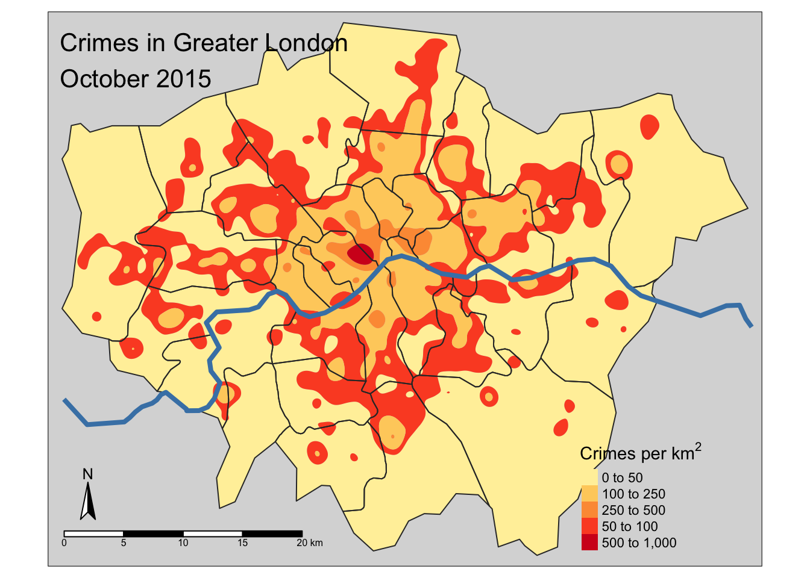

Chapter 5 Specialized graphs
Learning Objectives
- Examples of specialized graphs
5.1 specialized visualizations
5.2 heatmaps (e.g. iheatmapr)
5.3 heatmaps (e.g. iheatmapr)
library(iheatmapr)
data(measles, package = "iheatmapr")
main_heatmap(measles, name = "Measles<br>Cases", x_categorical = FALSE,
layout = list(font = list(size = 8))) %>%
add_col_groups(ifelse(1930:2001 < 1961,"No","Yes"),
side = "bottom", name = "Vaccine<br>Introduced?",
title = "Vaccine?",
colors = c("lightgray","blue")) %>%
add_col_labels(ticktext = seq(1930,2000,10),font = list(size = 8)) %>%
add_row_labels(size = 0.3,font = list(size = 6)) %>%
add_col_summary(layout = list(title = "Average<br>across<br>states"),
yname = "summary") %>%
add_col_title("Measles Cases from 1930 to 2001", side= "top") %>%
add_row_summary(groups = TRUE,
type = "bar",
layout = list(title = "Average<br>per<br>year",
font = list(size = 8)))5.4 networks (e.g. visNetwork)
5.5 networks (e.g. visNetwork)
library('visNetwork')
nodes <- read.csv("data/network/Dataset1-Media-Example-NODES.csv", header=T, as.is=T)
links <- read.csv("data/network/Dataset1-Media-Example-EDGES.csv", header=T, as.is=T)
nodes$shape <- "dot"
nodes$shadow <- TRUE # Nodes will drop shadow
nodes$title <- nodes$media # Text on click
nodes$label <- nodes$type.label # Node label
nodes$size <- nodes$audience.size # Node size
nodes$borderWidth <- 2 # Node border width
nodes$color.background <- c("slategrey", "tomato", "gold")[nodes$media.type]
nodes$color.border <- "black"
nodes$color.highlight.background <- "orange"
nodes$color.highlight.border <- "darkred"
visNetwork(nodes, links) %>%
visOptions(highlightNearest = TRUE, selectedBy = "type.label")5.6 maps (e.g. tmap)
#> rgeos version: 0.3-26, (SVN revision 560)
#> GEOS runtime version: 3.6.1-CAPI-1.10.1 r0
#> Linking to sp version: 1.2-5
#> Polygon checking: TRUE
5.7 maps (e.g. tmap)
library(tmap)
library(tmaptools)
library(rnaturalearth)
library(sp)
regions <- ne_load(scale = "large", type = "states", category = "cultural", destdir = "data/ne")
london <- regions[which(regions$region == "Greater London"),]
london <- set_projection(london, projection = 27700)
crimes <- rbind(read.csv("data/crimes/2015-10-city-of-london-street.csv"),
read.csv("data/crimes/2015-10-metropolitan-street.csv"))
crimes <- crimes[!is.na(crimes$Longitude) & !is.na(crimes$Latitude), ]
coordinates(crimes) <- ~ Longitude + Latitude
crimes <- set_projection(crimes, current.projection = "longlat", projection = 27700)
crimes_london <- crop_shape(crimes, london, polygon = TRUE)
crime_densities <- smooth_map(crimes_london, bandwidth = 0.5, breaks = c(0, 50, 100, 250, 500, 1000), cover = london)
rivers <- ne_load(scale="large", type="rivers_lake_centerlines", category="physical", destdir = "data/ne")
thames <- crop_shape(rivers, london)
tm_shape(crime_densities$polygons) +
tm_fill(col = "level", palette = "YlOrRd",
title = expression("Crimes per " * km^2)) +
tm_shape(london) + tm_borders() +
tm_shape(thames) + tm_lines(col = "steelblue", lwd = 4) +
tm_compass(position = c("left", "bottom")) +
tm_scale_bar(position = c("left", "bottom")) +
tm_style_gray(title = "Crimes in Greater London\nOctober 2015")